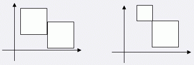

探险机器人在 Samuel 星球上寻找一块奇特的矿石，然而此时它陷入了一片神秘的域场区域，动弹不得。
探险空间站立刻扫描了这片区域，绘制出该区域的域场分布平面图。这片区域中分布了 $N$ 个磁场，每个磁场呈正方形，且边与坐标轴平行。
例如下图中，存在 $3$ 个磁场，白点表示机器人的位置，黑点表示矿石的位置：
科学家们分析平面图，进一步发现：这些磁场为大小不一的正方形，可能相交，甚至覆蓋，但是它们的边缘不会重合，顶点也不会重合。
例如下面的两种情形是不会出现的：

科学家们给探险机器人启动了磁力罩，这样它就可以在磁场中自由穿越了。 初始时，探险机器人和所有矿石都不在任何磁场的边缘。由于技术限制，在穿越过程中机器人只能够水平或垂直移动，且不能够沿着磁场的边缘行动。 由于磁力罩的能量有限，科学家们希望探险机器人穿越尽量少的磁场边缘采集到这块矿石。例如上图中，探险机器人最少需要穿越两次磁场边缘。 现在小联请你编写程序，帮助科学家们设计探险机器人的路线，统计探险机器人最少需要穿越多少次磁场边缘。
第一行有一个整数 $N$，表示有 $N$ 个磁场（$1 < N < 100$）。随后有 $N$ 行，每行有三个整数 $X$、$Y$、$C$（$0 < X ,Y ,C < 10000$），表示一个磁场左下角坐标为$（X,Y）$，边长为 $C$。接下来有一行，共有四个整数 $S_X, S_Y, T_X, T_Y$，表示机器人初始坐标为$（S_X, S_Y）$，矿石坐标为$（T_X，T_Y）$（其中，$1 < S_X, S_Y, T_X, T_Y < 10000$）。
单行输出一个整数，表示机器人最少需要穿越多少次磁场边缘。
2 1 3 3 2 1 4 0 0 3 4
2
 Comet OJ
Comet OJ